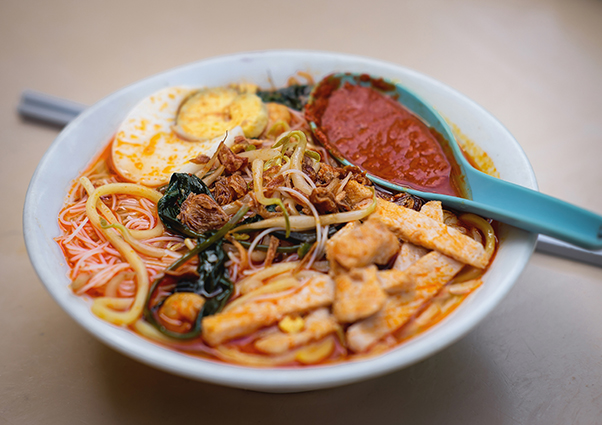
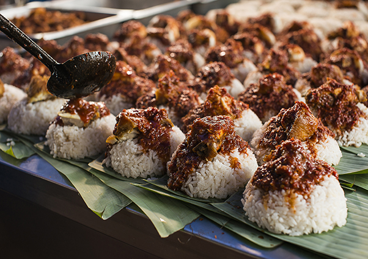
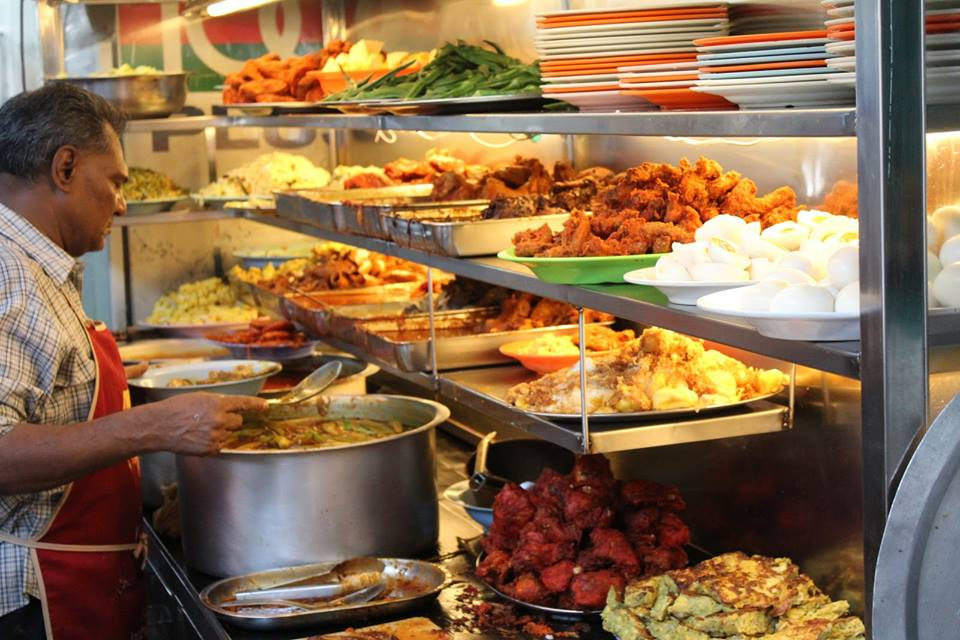
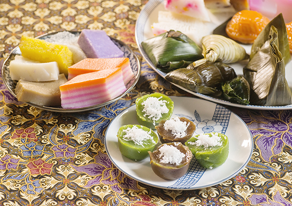
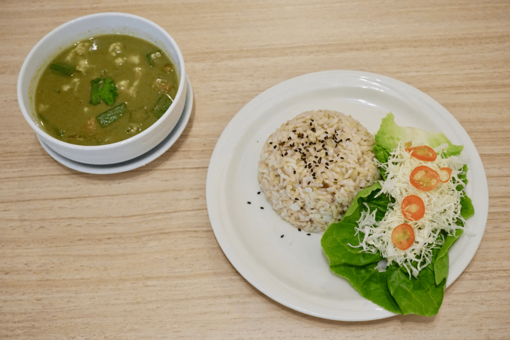
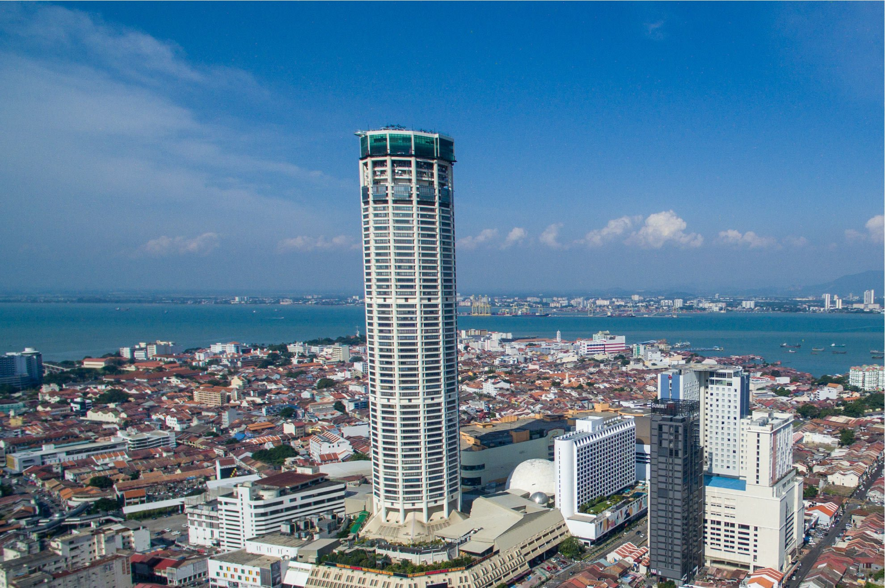
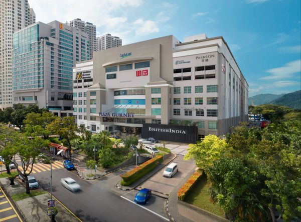
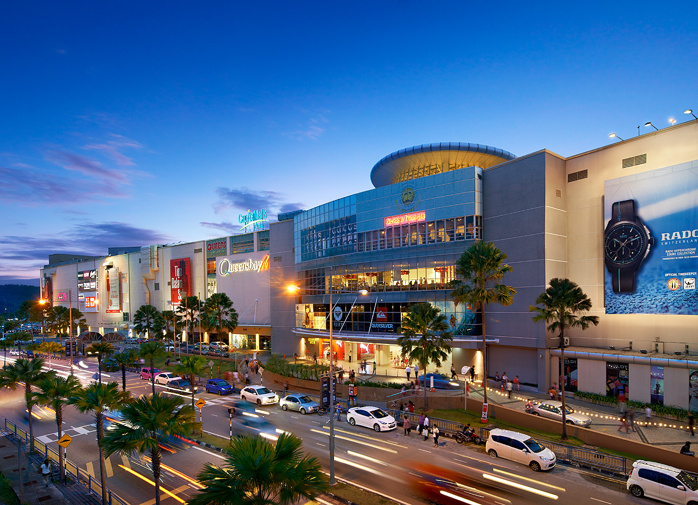
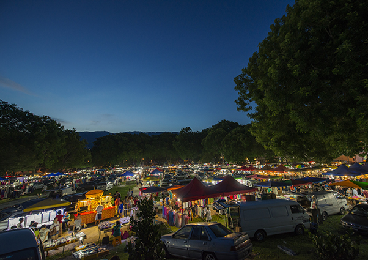

In Penang, your only culinary worry would be not having enough time to feast on all the city has to offer. Not only are Asia’s major races all represented in Penang’s cuisine, they are fused together in the forms that are truly unique to Penang like Nyonya and Jawi Peranakan cooking. Nyonya cuisine is a blend of Malay, Chinese and Thai influences that is well known especially around the region. The criminally overlooked gem is Jawi Peranakan food, a product of the Indian-Muslim, Straits-born community which combines Tamil, Pakistani, Persian and Malay cooking styles.
Enjoy meals along the streets at hawker stalls, duck into quaint cafes or dress up for a fine dining outing. Each meal is a delightful experience waiting to be savoured as Malaysia’s food capital takes great pride in its title, regardless of where you decide to dine.
For veggie lovers
The recent years have seen a real rise in healthy eating. Penang naturally is at the forefront of this. Vegetarians definitely do not miss out on anything as there are plenty of Chinese and Indian eateries that cater to them. Some outlets even prepare vegetarian versions of famous local street dishes such as laksa, char koay teow, nasi lemak, curry mee and lor bak. Organic and vegan restaurants are not a rare sight on the island as well, serving up hearty meals that are packed with flavour as well as goodness.
Hokkien Mee
The Penang Hokkien Mee is made delicious by its rich prawn and pork soup base. It’s normally eaten with yellow noodles and rice noodles, however occasionally, Penangites opt to have it with instant noodles. Penang Hokkien Mee is always garnished with fried shallots and special spicy prawns. It’s available in most coffee shops and street food stalls in Penang.
Nasi Lemak
Small triangular packets of rice cooked in coconut milk accompanied by a dollop of sambal, hard-boiled egg and crispy fried anchovies are ubiquitous.
Where to try: Find pyramids of these packets atop tables at most coffee shops or watch out for them at little stalls on street corners.
Nasi Kandar
The Indians, whether Muslim or Hindu faith, had given Penang its most famous and sought-after cuisine – the nasi kandar. People have been known to travel from all over just to score a plate of rice utterly drenched in at least two types of lively-flavoured curries accompanied by fried chicken, fish, mutton or seafood and a myriad of vegetables. What started as peddling rice and curries, hand-carried in pots to port workers in Penang, nasi kandar has certainly come a long way since then. It’s no surprise since the Indians came from a land of spices from which they expertly grind into various curry pastes that produce robust and colourful curries and marinade.
Where to try: Hameediyah restaurant on Lebuh Campbell, Line Clear on Jalan Penang and Nasi Beratur on Jalan Masjid Kapitan Keling in George Town, as well as a couple of nasi kandar restaurants on Jalan Todak 4 in Seberang Perai.
Nyonya Kuih
Kuih – these are Malay or Nyonya sweets. They are normally rice flour based with coconut milk, steamed or baked and are very colourful. Some contain glutinous rice, palm sugar and additional flavours are derived from natural sources such as pandan leaves.
Where to try: The stall on Jalan Jones, off Jalan Kelawei, has an array of Malay kuih. As for Nyonya kuih, you can go to Moh Teng Pheow on Jalan Masjid, off Lebuh Chulia.
Vegetarian Food
Penang is also an ideal destination for vegetarians as the veggie food scene in Penang is ever growing. There is an abundance of Chinese and Indian vegetarian food outlets that are suitable for vegans too. A number of Chinese vegetarian restaurants serve the vegetarian version of Penang’s local street food such as laksa, char koay teow, nasi lemak, curry mee and lor bak, where mock meat is used. There are also restaurants that serve purely organic food packed with loads of goodness.
Shopping in Penang is a larger-than-life experience! Whether you are a fan of modern shopping malls, or traditional bazaars and street markets, Penang has something for everyone.
George Town is a great place for antique hunters and vintage lovers. One can spend a whole day hunting for Nyonya porcelain, lacquerware and pottery along stores on Penang Road and Chulia Street. For those who prefer to shop in comfort and from a more curated collection, there are antique outlets in malls like Gurney Plaza as well.
When the sun goes down, the action heats up! Shopping malls and shops don’t close until 10pm so there’s plenty of time to wander around and work up a thirst at the many watering holes in George Town and the beach area of Batu Ferringhi.
Shopping Malls
You will sometimes hear that shopping is the favourite pastime of Malaysians. Without a doubt, Penang has its impressive share of shopping malls to satisfy any shopaholic.
Kompleks Tun Abdul Razak (KOMTAR)
In the heart of the city lies Penang’s famous landmark – KOMTAR. The iconic building holds many mid-range local boutiques and electronic stores. Head to level 4 and visit Penang House of Music to learn about the state’s glamorous musical lineage. Discover The Top, Penang’s newest icon within KOMTAR that features large indoor theme attractions including a glass-bottomed Rainbow Skywalk and Observatory Deck, at 250m above the ground. There is also a walkway that links KOMTAR to 1st Avenue Mall, a newer mall with trendy high-street labels, karaoke joint and a cinema.
Gurney Plaza
Other popular shopping venues include Gurney Plaza and Gurney Paragon, both a stone’s throw away from each other on Gurney Drive.
Queensbay Mall
A strategic shopping pitstop is Queensbay Mall, the largest in Penang with over 500 tenants. Located just 10 minutes away from the Penang Bridge and Penang's International Airport, the mall is a perfect start or finish to one’s trip in Penang.
Spas and Massages
After some high-octane adventuring, it’s time to unwind and relax. Soak in the laid-back island vibes and head to a nearby spa or a massage centre. Whether you prefer getting your massage enveloped by lush nature or surrounded by clean lines, there is an option catered just to your taste. Pick from traditional Thai massages, foot reflexology or float in a sensory deprivation chamber and feel all the tension in your body melt away.
The adventure does not stop when the sun goes down. The city has something for all visitors. You could be a nocturnal party-goer, supper fanatic, art-lover or just prefer an evening of live classical music. One thing is for sure, going to bed early is a huge mistake.
Night Markets
Pasar Malam or night markets happen weekly to serve the needs of the neighbouring communities. Street vendors set up their stalls along roads around 6:30p.m. on a particular day of the week, usually near a densely populated residential area. Everyday household items and clothing are sold at affordable prices next to mouth-watering street food.
Paying a visit to a night market is a perfect opportunity to sample local food, practice bargaining skills and maybe purchase a quirky t-shirt. It's loud, bright, crowded and a great plunge into the local culture that will definitely leave an impression.
Pick a day or pick a place: